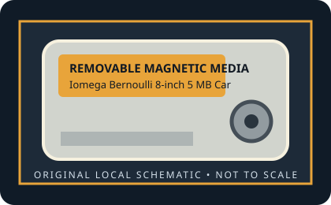

[ REMOVABLE MEDIA // MODEL-SPECIFIC RECORD ]
Iomega Bernoulli 8-inch 5 MB Cartridge
Original Iomega Bernoulli Box, 8-inch media generation (introduced 1982). 5 MB nominal removable-disk capacity. The cartridge contains an 8-inch flexible magnetic disk in a rigid 11 × 8-inch enclosure.

IDENTIFICATION: Verify the exact capacity, physical format, and generation printed on the medium. A cartridge has no host interface of its own; drive interface and system support must be checked against the exact reader model.
Format, capacity and compatibility
| Product / media model | Iomega Bernoulli 8-inch 5 MB Cartridge |
|---|---|
| Generation / format | Original Iomega Bernoulli Box, 8-inch media generation (introduced 1982). |
| Capacity and medium | 5 MB nominal removable-disk capacity. The cartridge contains an 8-inch flexible magnetic disk in a rigid 11 × 8-inch enclosure. |
| Media and drive interface | Cartridge has no electrical interface. Original external drive systems used a host controller card or a computer-specific external connection; verify the drive label/manual for the actual host interface. |
| Compatibility | Use only with an original Bernoulli Box drive configured for 5 MB media. The cartridge itself has no electrical interface; the drive connected to its host through the applicable controller/interface. Later 5.25-inch Bernoulli Box II media and drives are a different physical generation. |
| Version and model caveat | The 5 MB capacity is one of the documented original 8-inch Bernoulli media capacities. Do not infer that a drive labeled for another density can format this cartridge to a different capacity. |
Handling and preservation
Keep the cartridge in its protective case, away from dust, moisture, heat, strong magnetic fields, and physical shock. Do not open a sealed cartridge or force it into a drive. For preservation, image read-only with a known-compatible mechanism, retain the source media, record the drive/interface used, and verify copied data with checksums.
- Photograph the label and shell before use; preserve packaging, write-protect state, and acquisition notes.
- Keep at least two independent verified copies of important data. A legacy removable cartridge by itself is not an archival strategy.
Model and generation notes
The 5 MB capacity is one of the documented original 8-inch Bernoulli media capacities. Do not infer that a drive labeled for another density can format this cartridge to a different capacity.
Storage capacity names and drive interface names describe different things: confirm the cartridge format/generation first, then check the exact reader model, host connector, controller, operating-system driver, and filesystem separately.
Sources and standards
- Museum of Obsolete Media — Iomega Bernoulli disk, 8-inchDocuments the 1982 8-inch cartridge construction, host-use context, and 5–20 MB capacity range.
- InfoWorld, August 1985 — Bernoulli Box review (Google Books)Contemporary product-era documentation; use the period article alongside the exact cartridge label.
- Internet Archive — Bernoulli Box 5 MB documentation searchSearches archived drive manuals and product material relevant to the original 5 MB format.
Discontinued-media specifications are cross-checked against period product material and museum/archive documentation. Family-level history does not replace the exact drive manual for interchangeability.